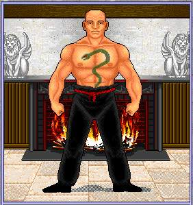

| Back to Class Info. |
| The Art Of The Martial Artist |
| Martial Artists attack or kick their opponests with their hands or feet rather than using weapons. As they advance in skill level, Martial Artists can also jumpkick, sweep and attack their opponents using the Chi art forms. Martial Artists must be quite agile to kick, jump, block and parry blows. They must move quickly in close quarters. They must also have sufficient strength to damage their opponents and a strong Constitution to withstand injuries from physical combat. Martial Artists gain one attack per round at every 5 Experience Levels. (5, 10,15, etc) At Level 6, Jumpkick is gained, allowing MA's to move several hexes and strike a crit. At Level 7, Sweep is acquired, allowing MA's to attack all on the current hex. At Level 19, MA's start to learn the Chis of the MA. |
 |
| To MA Chis. |
| Skill Level Skill Name 0 Unskilled 1 Initiate 2 White Belt 3 Yellow Belt 4 Green Belt 5 Blue Belt 6 Red Belt 7 Brown Belt 8 Brown Belt, 2nd degree 9 Brown Belt, 3rd degree 10 Black Belt 11 Black Belt, 2nd degree 12 Black Belt, 3rd degree 13 Black Belt, 4th degree 14 Black Belt, 5th degree 15 Black Belt, 6th degree 16 Black Belt, 7th degree 17 Black Belt, 8th degree 18 Black Belt, 9th degree 19 Master 20 Grand Master 21 Beholder of the Art 22 Seeker of the Sash 23 Bronze Sash 24 Bronze Sash, 2nd degree 25 Bronze Sash, 3rd degree 26 Bronze Sash, 4th degree 27 Bronze Sash, 5th degree 28 Bronze Sash, 6th degree 29 Bronze Sash, 7th degree 30 Bronze Sash, 8th degree 31 Silver Sash |